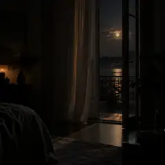
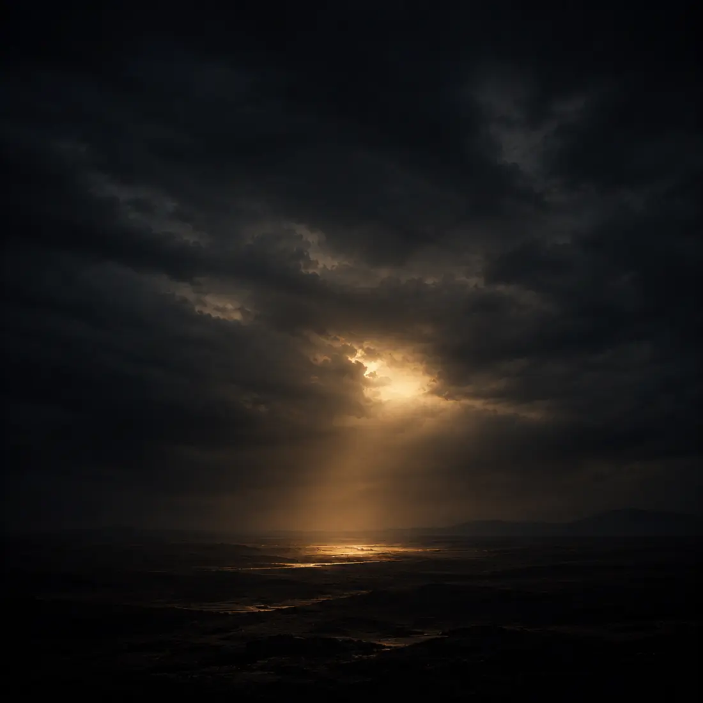

Spring til afspilleren
SYNQ STUDIOS
Udgivelser
Følg os
Forside
Om SYNQ
Udgivelser
SYNQ Game
Tilbage til udgivelser

SYNQ STUDIOS · 2026
Bliv i nat
Single · 13. september 2026
Lyt til sangen
Lyt, hvor du vil.
Vælg din foretrukne streamingtjeneste.
Spotify
YouTube
YouTube Music
Apple Music
TIDAL
Udforsk flere udgivelser
Nyere udgivelse
Stadig her

Tidligere udgivelse
Nav Dilê Min